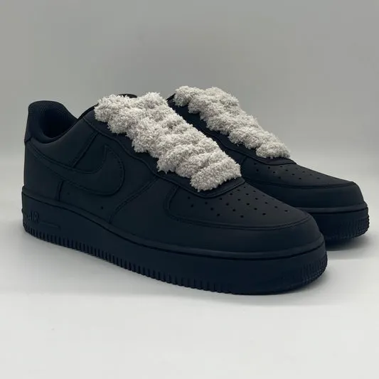

Destacadas
New Balance 550
Las New Balance 550 han regresado con fuerza, consolidándose como una de las zapatillas más icónicas de la moda actual. Diseñadas originalmente en 1989 para el baloncesto, este modelo ha resurgido como una pieza clave del streetwear gracias a su estilo retro y su construcción de alta calidad. Leer Articulo
Nike Air Force One
Las Nike Air Force One son una de las zapatillas más emblemáticas de todos los tiempos. Desde su lanzamiento en 1982, este modelo ha trascendido el ámbito deportivo para convertirse en un símbolo del streetwear y la cultura urbana. Su diseño atemporal y su comodidad inigualable las han mantenido como una opción preferida por generaciones de sneakerheads.Leer Articulo
Puma Suede
Las Puma Suede han sido un pilar en la historia del calzado desde su lanzamiento en 1968. Su diseño atemporal y su relevancia en la música, el deporte y el streetwear las han convertido en una de las zapatillas más icónicas de todos los tiempos. Con un equilibrio perfecto entre comodidad y estilo, las Suede siguen marcando tendencia en la moda urbana.Leer Articulo
Reebook Classic
Las Reebok Classic son un ícono del calzado deportivo y urbano. Desde su lanzamiento en los años 80, este modelo ha conquistado a amantes del fitness, la moda y el streetwear gracias a su diseño atemporal y su inigualable comodidad. Su versatilidad las ha convertido en una de las zapatillas más queridas por generaciones.Leer Articulo